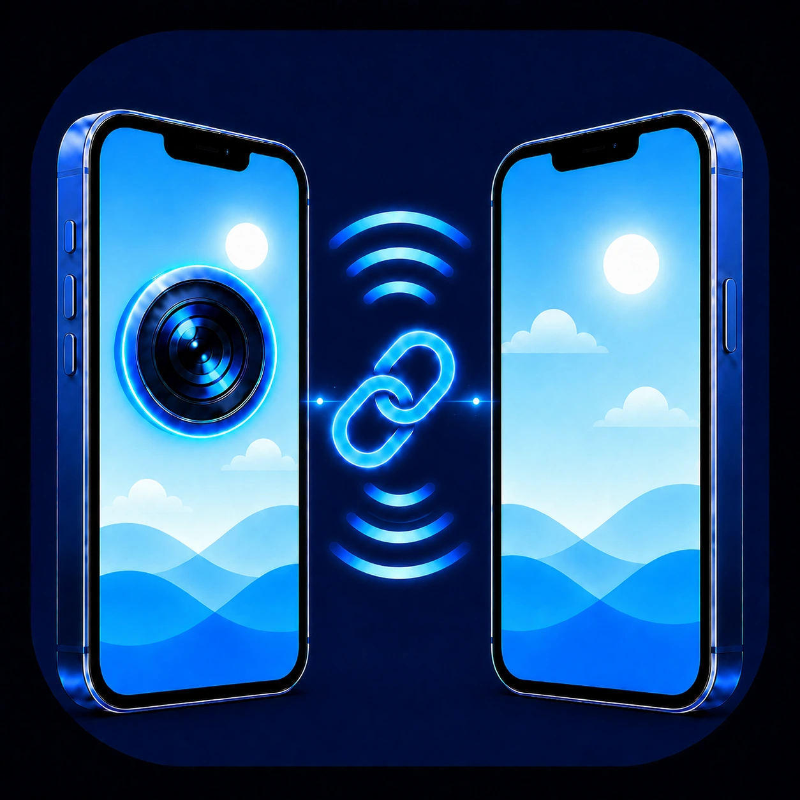
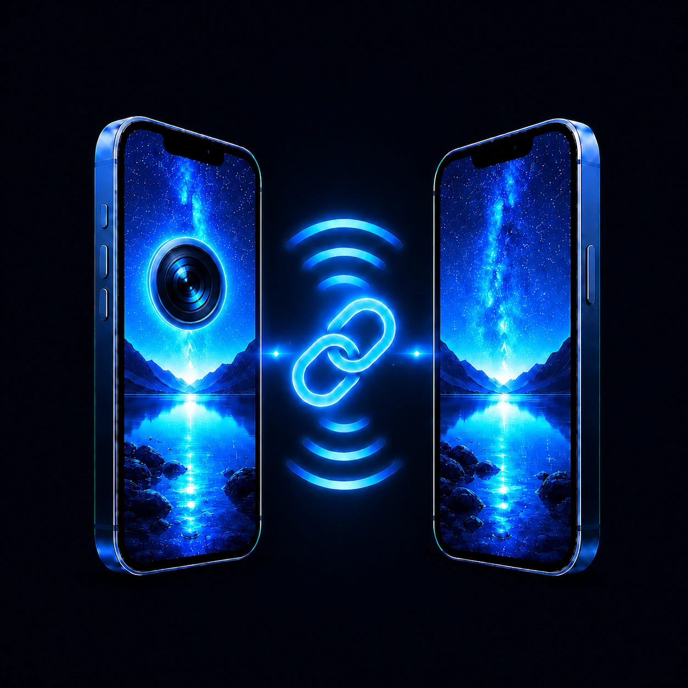
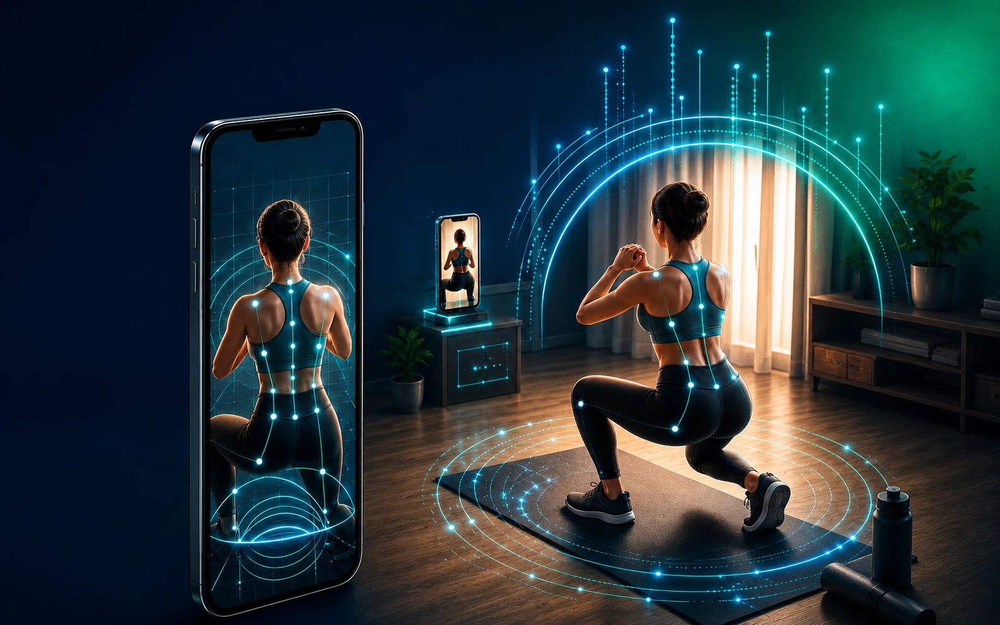
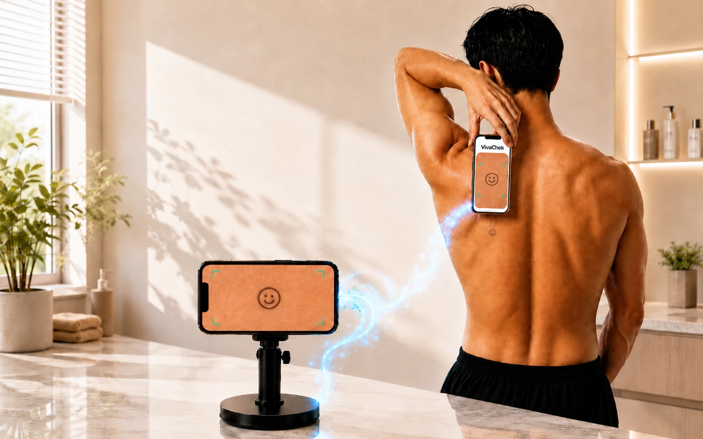
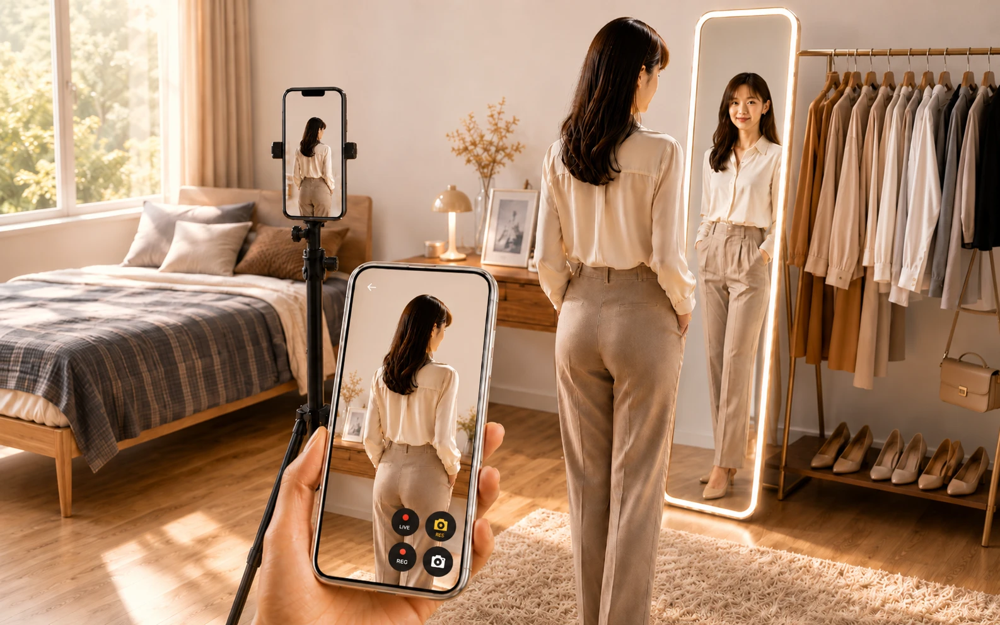
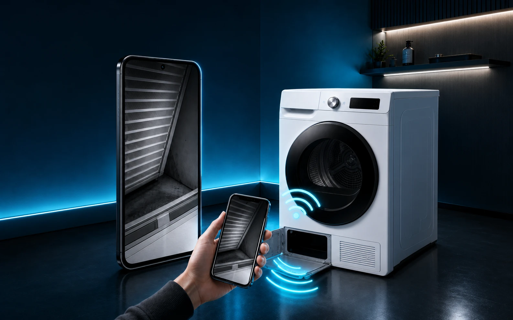
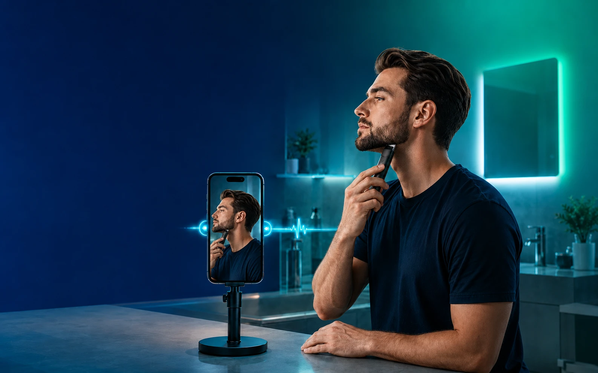
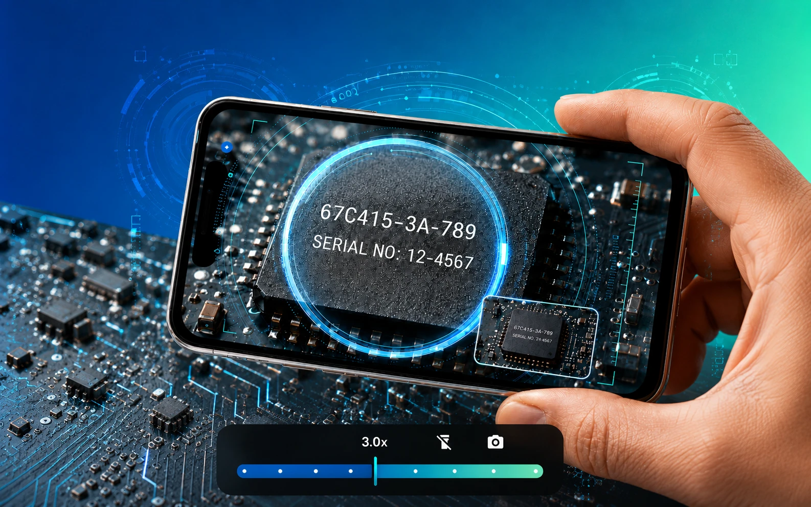

1
Create a QR on Camera
Generate a connection QR code on the phone you will use as the camera.

ViewOn LinkReal-time camera sharing
ViewOn Link connects two phones with a QR code, letting one work as the Camera and the other as the Viewer. Use it whenever you need a second screen for classes, work, assisted shooting, or close-up checking.

No sign-up or complicated setup. Create a QR code on the Camera device, scan it on the Viewer device, and see the live screen instantly.
Generate a connection QR code on the phone you will use as the camera.
Scan the QR code with the phone or tablet you will use as the viewer.
Once connected, you can see the Camera screen directly on the Viewer.
Use it right away for real situations like magnifying small text, checking outfit fit and your back view, inspecting under a car, looking under furniture, checking workout posture, or grooming.

Even when working out alone at home, you can check your back, shoulders, hip line, and movement balance right away.
Check your back muscle lines and pose in real time, then capture it like someone else took the photo for you.

Even areas like your back that your hands can reach but your eyes cannot see can be checked more clearly than trying to look directly.

Check details that are hard to see with one mirror, such as shoulder lines, your back view, and overall fit.
Check hidden areas on screen without bending deeply or lying on the ground.

Look into places your hands and eyes cannot easily reach, like under beds, sofas, and behind furniture.

Clearly check areas that are hard to see alone, such as the jawline, sideburns, and side lines.

Enlarge fine print, part numbers, and tiny objects on your phone screen.
Focused on quick connection and real-time viewing instead of complicated settings.
View the Camera device’s screen in real time on the Viewer device.
Connect by scanning a QR code without typing long addresses or codes.
Choose the right quality for the situation from 240p, 480p, 720p, and 1080p.
Magnify small text and tiny objects even without connecting two devices.
Save the screen you are viewing whenever you need it.
Connect Android and iPhone devices with each other.
To protect privacy, it works only when both devices are connected to the same Wi‑Fi environment. A random connection code is generated each time as a QR code, and connection information is cleared when you finish.
Connect with a QR code and view the camera screen on another device right away. Available on Android and iPhone.
For a stable real-time connection, using the same Wi‑Fi environment is recommended.
Basic connection is done with a QR code and is designed to work without complicated sign-up.
ViewOn Link requires two devices. If you need another smartphone right away, show the app install link to someone nearby and install it together. Family, friends, coworkers… the Viewer device may be closer than you think.
You can save the screen viewed on the Viewer as a photo or video whenever needed.
Yes. During the open period, all features are available for free. However, each connection is limited to 5 minutes. After a connection ends, you can scan the QR code again to reconnect.
This open period is for checking feature stability, user needs, and improvement feedback. Until the Pro version is ready, all features are kept open, and feedback will be reflected as ViewOn Link improves toward the official version.